Opens in a new tab — a quick vocabulary duel inspired by the lesson
📚 Film English · Language & Literature · Lesson Companion
A visual lesson deck titled “Seizing the Day — The Tragedy and Triumph of Dead Poets Society” turns a beloved 1989 film into a masterclass in conformity, courage, and vocabulary — and this article unpacks every layer of it for English learners.
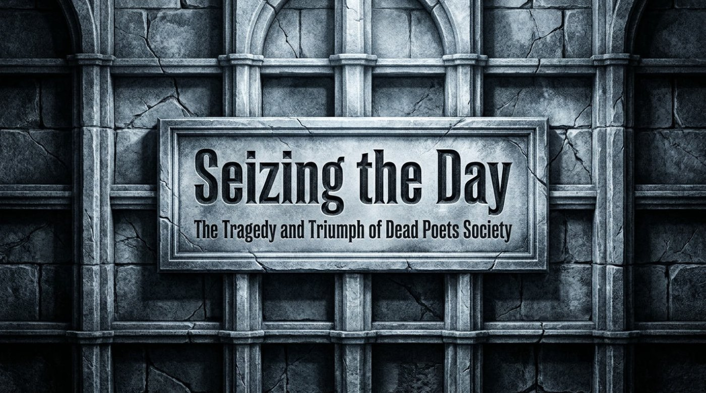
Here is a fact worth pausing over. The same film received two stars from one of America’s most famous critics, who dismissed it as “a collection of pious platitudes masquerading as a courageous stand,” and, at the very same time, earned a rare A+ grade from ordinary moviegoers, “millions” of whom found “genuine, life-altering inspiration in its call to seize the day and challenge conformity.” The film is Dead Poets Society, and the gap between those two verdicts is exactly where this lesson begins.
The material at the heart of this article is a twelve-part visual deck produced in Gemini Notebook, an AI-assisted notebook tool, under the title “Seizing the Day — The Tragedy and Triumph of Dead Poets Society.” Every slide text quoted below comes directly from that AI-built deck, which makes it a neat example of AI-supported lesson design: the deck walks from the stone corridors of a fictional 1959 boarding school to the final, triumphant desk-standing scene, and along the way it quietly teaches some of the richest vocabulary in modern English. The pages that follow retell the deck’s story, mine it for language, expose the metaphors that hold it together, and finish with an interactive check, a game, and the original files.
The deck opens with the architecture itself. “Screenwriter Tom Schulman modeled the fictional 1959 Welton Academy in Vermont after his own rigid prep school experiences,” it explains, and the observation that follows is the thesis of the whole material: “The school operates as an inescapable machine built on four unyielding pillars.” Those pillars — Tradition, Honor, Discipline, Excellence — are drawn on the slide like an engineering blueprint, complete with measurement arrows, because the deck wants the reader to see the school as a constructed object rather than a neutral place. Notice that the four words are, on their own, admirable values; the tragedy of Welton is not the words but the rigidity, the fact that the machine admits no adjustments.
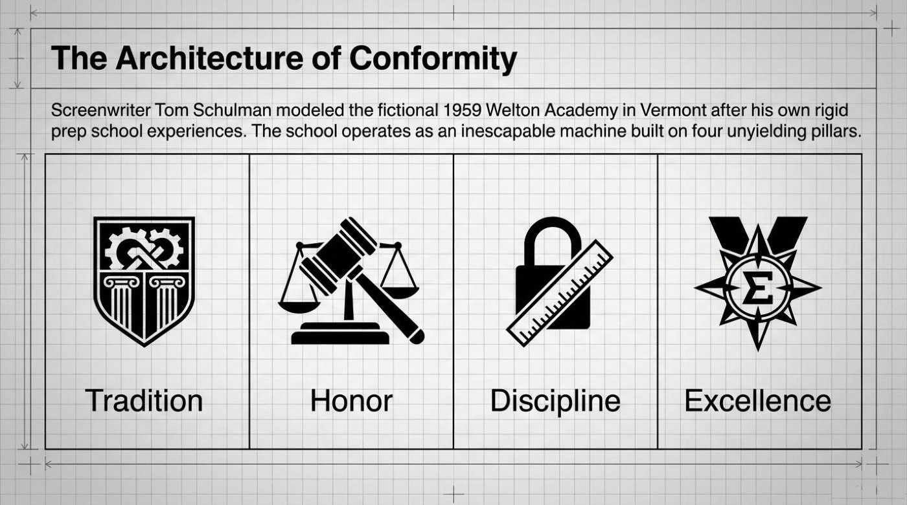
📌 Pay attention to how institutions speak through vocabulary. Mottos, pillar words, and grand abstractions are designed to feel permanent, and the practical move for any reader — or any language learner — is to notice them consciously. Collect the “pillar words” of the school, company, or country around you, and then ask yourself, in declarative silence, whether they describe reality or merely decorate it. That habit of listening to institutional language is one of the most transferable skills a film lesson like this can offer.
Into this machine walks the collision. As the deck narrates, “English teacher John Keating begins his first class by ordering his students to literally rip the mathematical introduction out of their poetry textbooks.” The textbook page he destroys contains a graph that measures poems on two axes, Perfection and Importance, and the film’s most famous classroom order arrives immediately: “Rip it out! We are not laying pipe, we’re talking about poetry.” The line is worth quoting twice, because it compresses the entire conflict into eleven words. Laying pipe is precise, plan-driven, measurable work; poetry, in Keating’s framing, is none of those things, and treating art like plumbing flattens the very thing that makes it alive.
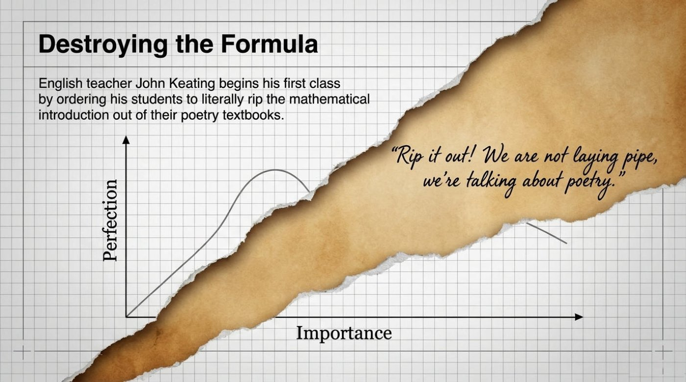
📌 The language-learning advice hiding in this scene is direct. Formulas and rules describe language; they do not produce it. A learner who memorizes grammar tables the way the graph measures poems will speak correctly and lifelessly, while a learner who reads, repeats, and carpe diem-style uses the language develops a voice. It is important to understand that Keating is not attacking accuracy itself — he is attacking the belief that accuracy is the whole story.
The deck makes the clash explicit by placing two philosophies side by side, torn apart like a sheet of paper. The Welton Way lists its “Focus: Preparing for a dictated future (e.g., Harvard Medical School),” its “Method: Rote memorization and strict obedience,” and its “Values: Tradition, Honor, Discipline, Excellence.” The Keating Way answers with “Focus: Carpe Diem (Seize the day) in the present,” a method of “Free-thinking, standing on desks, unique walking styles,” and values of “Poetry, Beauty, Romance, Love.” The handwritten margin notes that frame the slide carry the emotional charge of the whole comparison — 🎓 “No more conformity!” and 🎓 “Find your own voice!” — and they read like the two commands Keating gives his students across the entire film.
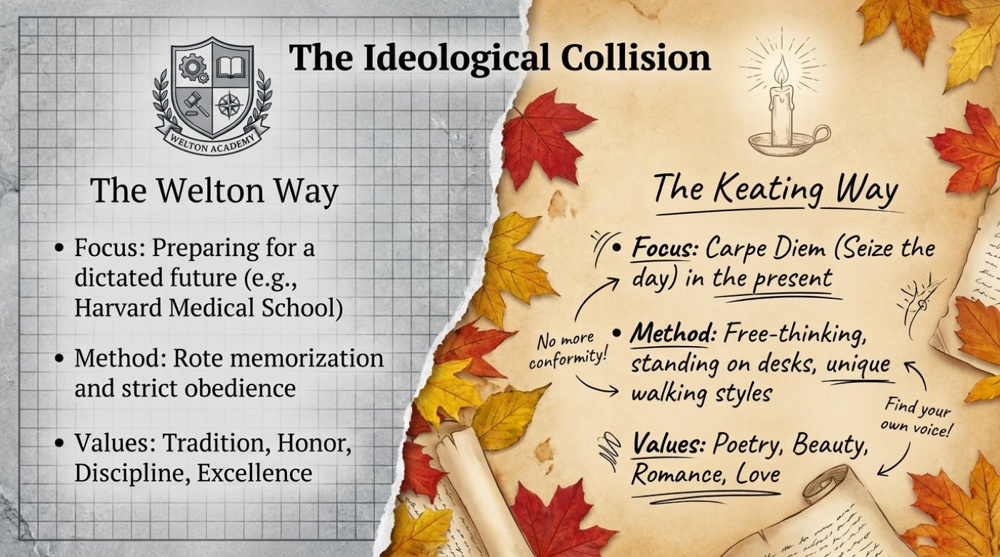
Interestingly, the same rebellion that drives the plot also drove the production. The deck records that “the push against rigid control extended to the production itself,” because “Director Peter Weir secretly hid a half-day’s filming schedule from Disney executives, giving Robin Williams total freedom to utilize his comedic improvisation skills without studio oversight.” The deck’s conclusion about that choice is elegant: “A subtle subversion of authority created the film’s most authentic, spontaneous moments.” In plain terms, the film about breaking rules was itself made by quietly breaking one, and the result was authenticity that no schedule would have produced.
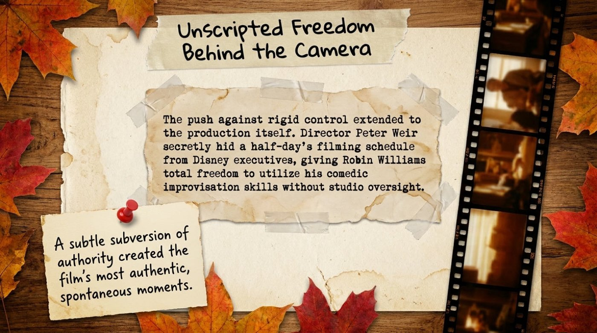
📌 Remember that improvisation is a trainable skill, not a talent reserved for comedians. A practical exercise borrowed from this slide is to speak English for sixty seconds about any topic without a script, then record and listen back. The first attempts feel exposed and unpolished; the habit itself, repeated weekly, builds exactly the spontaneous fluency that studio oversight would have crushed in Robin Williams.
The deck then turns to the students, presenting each one as a “before and after” pair pinned to a corkboard of scattered words — Passion, Rebellion, Identity, Seize the Day, Awakening, Voice, Freedom. The transformations are the emotional heart of the material. Neil Perry moves from “Obedient son destined for military school” to “Passionate stage actor playing Puck.” Todd Anderson moves from “Terrified, voiceless introvert” to “Spontaneous poet sounding his barbaric yawp.” Charlie Dalton moves from “Standard preppy conformist” to “Rebellious Nuwanda, demanding girls be admitted.” Each after-picture is a different dialect of the same sentence: a person speaking in their own voice for the first time.
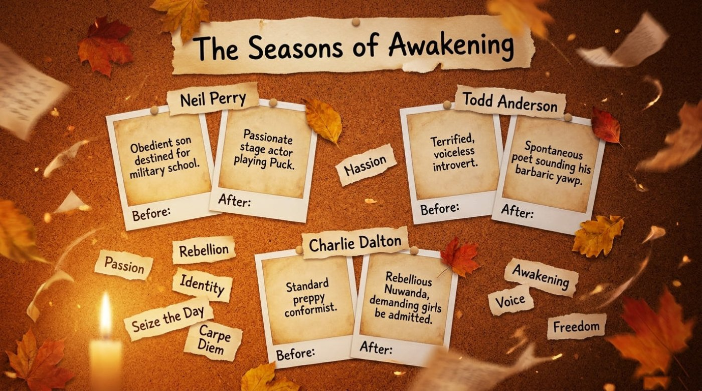
The material refuses to end on triumph, and its honesty is part of its educational value. ⚠️ Describing the story’s darkest turn — and a gentle warning applies here, because the material deals with a character’s suicide — the deck states that “Neil Perry’s suicide is the ultimate collision between the newly ignited fire of the Dead Poets and the unyielding stone of Welton,” adding that “lacking support from his mother and unable to defy his authoritarian father’s demand that he quit acting, Neil’s fragile new freedom is violently crushed by the institution.” The deck then holds both worlds together in a diagram of two torn circles — “The Joy of Liberation” and “The Rigid World” — meeting in a shared middle labeled “Consequences,” and explains Keating’s position with disarming fairness: “Keating gave the boys the intellectual tools to think for themselves, but he could not protect them from the consequences of exercising that freedom in a rigid world.” The lesson the deck draws from the wreckage is the most quotable line in the whole material: “The film’s ultimate tragedy reveals its deepest lesson — true individuality is not just a joyful rebellion; it carries a heavy, sometimes fatal, responsibility.” Awakening, in other words, has a cost side of the ledger, and the deck refuses to hide it.
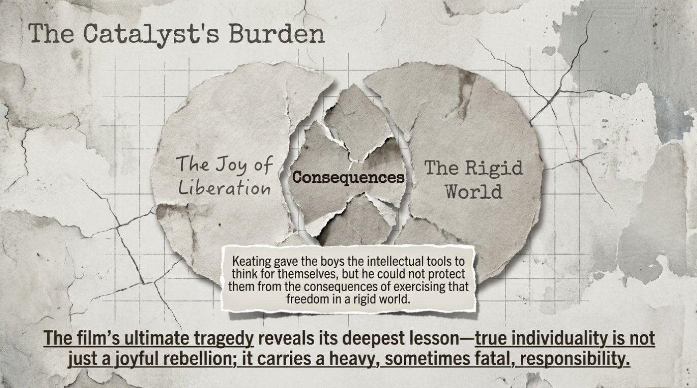
The deck closes its narrative arc by zooming out to the film’s afterlife, arranging the facts as glowing rings around a candle. “Made on a $16.4M budget, it grossed $235.8M worldwide.” It won the “Academy Award for Best Original Screenplay & BAFTA for Best Film.” Following Robin Williams’s death in 2014, “#captainmycaptain trended globally,” and in 2024, “Taylor Swift’s ‘Fortnight’ music video prominently featured alumni Ethan Hawke and Josh Charles.” The frame matters: a story about a single classroom rippled outward for thirty-five years, and the deck’s design itself — rings expanding from a flame — tells that story visually.
The vocabulary of this material is unusually cohesive, because every key term belongs to one of two worlds: the stone world of Welton or the fire world of Keating. Learning the words below, in their two colors, teaches more than definitions — it teaches how English encodes a cultural argument inside individual phrases. The critic’s review, reproduced on the deck’s scorecard slide, supplies several of them at once, so the entry point is his sentence: “a collection of pious platitudes masquerading as a courageous stand… I squirmed through the meetings of the Dead Poets Society.”
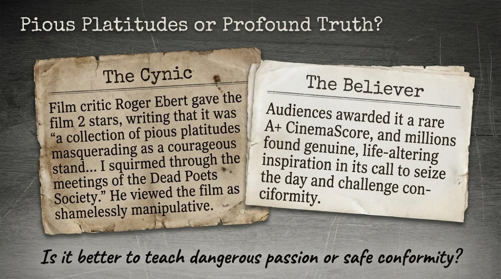
carpe diem Latin phrase · noun
Literal meaning: “pluck the day” — the Latin verb carpere originally describes picking fruit or harvesting, and diem means “day.”
Figurative meaning: to act on the present moment boldly, because the future is not guaranteed; the standard English rendering is “seize the day.”
From the material: the slide states “Focus: Carpe Diem (Seize the day) in the present,” which glosses the Latin immediately for the reader and anchors it against Welton’s “dictated future.”
How the material explains it: by placing the phrase opposite “Preparing for a dictated future (e.g., Harvard Medical School),” the deck teaches the word through contrast — carpe diem is what you practice when nobody has pre-written your calendar. The phrase itself descends from the Roman poet Horace, whose ode advises plucking the day rather than trusting tomorrow.
seize the day idiom · verb phrase
Literal meaning: seize means to grab something firmly, suddenly, and with force, as in “seize the rope.”
Figurative meaning: to take hold of an opportunity now, with energy and commitment, instead of postponing action.
From the material: the audience slide praises “its call to seize the day and challenge conformity,” pairing the idiom with its natural enemy.
How the material explains it: by framing the film’s entire cultural afterlife as people responding to this “call,” the deck shows that the idiom functions as a summons — something you answer, not merely admire. Notice the physicality: English consistently imagines time as an object you can grip.
conformity noun
Literal meaning: from Latin con- (“together”) and forma (“shape”) — literally “being shaped the same way” as everyone else.
Figurative meaning: the practice of matching your behavior, opinions, and appearance to the group’s rules, often at the cost of your own judgment.
From the material: the deck’s very first analytical slide is titled “The Architecture of Conformity,” and a margin note later exclaims, 🎓 “No more conformity!”
How the material explains it: by naming conformity as architecture, the deck teaches the word as a built structure — something designed, load-bearing, and hard to demolish — rather than as a personal weakness. The image quietly explains why the characters’ rebellion feels so dangerous: they are dismantling a building while standing inside it.
rote memorization noun phrase
Literal meaning: rote refers to mechanical repetition from memory; the word’s old sense is connected to “routine” and “wheel” — the same circle traced again and again.
Figurative meaning: learning that stores words or facts by repetition alone, without understanding, connection, or meaning.
From the material: the Welton slide lists “Method: Rote memorization and strict obedience,” welding the practice directly to discipline.
How the material explains it: by pairing rote memorization with obedience in a single method line, the deck teaches that the two reinforce each other: repetition trains the memory, and obedience trains the will. For a language learner, the slide doubles as a warning label on a tempting but shallow study habit.
barbaric yawp noun phrase
Literal meaning: barbaric means rough and uncivilized; a yawp is a loud, coarse shout or cry.
Figurative meaning: your raw, unfiltered, unmistakably personal voice — self-expression before it has been polished for anyone’s approval.
From the material: Todd Anderson’s “after” card reads “Spontaneous poet sounding his barbaric yawp,” a direct echo of Walt Whitman’s line in “Song of Myself”: “I too am not a bit tamed… I sound my barbaric yawp over the roofs of the world.”
How the material explains it: by assigning the phrase to Todd — the most terrified character — the deck teaches that the yawp is not personality volume but authenticity. A whisper can be a yawp. What matters is that the sound belongs to the person making it, and Whitman’s poetry is precisely the tradition Keating hands to his students.
platitude noun
Literal meaning: from French plat, “flat” — literally a flatness, a remark worn smooth and empty.
Figurative meaning: a trite, overused statement delivered as if it were profound; moral-sounding words with no felt content behind them.
From the material: Roger Ebert’s verdict, quoted on the slide, calls the film “a collection of pious platitudes masquerading as a courageous stand.”
How the material explains it: the deck’s “Cynic versus Believer” layout teaches the word as an accusation in a debate — the critic claims the film’s inspirational lines are hollow, while audiences claim they are genuine. Observing that dispute teaches the word’s social force: calling something a platitude is itself a strong move.
masquerade as verb phrase
Literal meaning: to attend a masquerade ball is to wear a mask and costume; masquerade as literally means “appear dressed as.”
Figurative meaning: to pretend to be something, to wear a false identity that hides the real one.
From the material: in Ebert’s sentence, platitudes “masquerading as a courageous stand” are allegedly wearing the costume of bravery.
How the material explains it: the deck preserves the critic’s full sentence, which lets the reader see the phrase doing precise work: it asserts a disguise and implies an unmasking. English loves this theatrical family of metaphors — mask, pose, facade, guise — and masquerade as is its most elegant member.
squirm verb
Literal meaning: to twist the body from side to side, the way a worm or a restless child moves.
Figurative meaning: to feel acute discomfort or embarrassment, so strong it seems physical — “the speech made me squirm.”
From the material: Ebert writes, “I squirmed through the meetings of the Dead Poets Society.”
How the material explains it: the deck quotes the whole confession, showing that critics describe bodily reactions to make judgments vivid. For learners, squirm is a model of the English habit of converting emotions into body language — cringe, wince, shudder, blush — and it is instantly usable in reviews and everyday complaints alike.
subversion noun
Literal meaning: from Latin sub- (“from below”) and vertere (“to turn”) — literally “turning from underneath,” like ground giving way under a building.
Figurative meaning: undermining an authority or system quietly, from within, rather than attacking it openly.
From the material: the production slide concludes, “A subtle subversion of authority created the film’s most authentic, spontaneous moments.”
How the material explains it: by attaching the adjective subtle, the deck teaches the word’s essential character: subversion hides inside obedience. Peter Weir followed the studio’s rules on paper while secretly freeing one afternoon — a perfect miniature of the word’s meaning, and a useful lens for Keating’s own teaching style.
unyielding adjective
Literal meaning: yield means to bend, give way, or surrender; unyielding describes material that refuses all of the above.
Figurative meaning: rigid and inflexible — used of people, rules, and institutions that will not compromise.
From the material: Welton is “an inescapable machine built on four unyielding pillars,” and in the tragedy slide the school appears as “the unyielding stone of Welton.”
How the material explains it: the deck applies the word to pillars first and stone later, teaching its range: architecture in both cases, with the second application turning the school itself into a geological force. When fire meets unyielding stone, the deck implies, it is the fire that decides how the collision ends.
The six terms that carry the material’s argument — carpe diem, conformity, rote memorization, barbaric yawp, platitude, and subversion — are collected below as interactive flip cards. Each card holds the literal meaning, the contextual meaning, a direct example from the deck, and a short note on why the word matters. Click or tap a card to turn it over, and use the button beneath to turn the whole set at once.
Front side shows the term, its part of speech, and a hook. Back side holds the full breakdown.
Four images carry the deck’s argument, and each one repays a second look. They are drawn from the material itself — its architecture, its geometry, its weather, and its rings — and together they explain why a film about a boarding school has stayed alive in popular memory for decades.
The deck’s founding metaphor treats Welton not as a school but as a structure: “The school operates as an inescapable machine built on four unyielding pillars.” The significance is precise. Machines are designed by someone, for a purpose, and their parts are interchangeable; by choosing machine-language — architecture, machine, pillars — the deck argues that Welton’s real product is neither knowledge nor character but reliable, replaceable graduates. The four pillar words become load-bearing elements of ideology: remove one and the roof of the whole value system threatens to come down. That is why Keating’s small acts of rebellion, like tearing out a page or walking in circles, read as structural attacks rather than classroom antics, and it is why the institution answers them with such force.
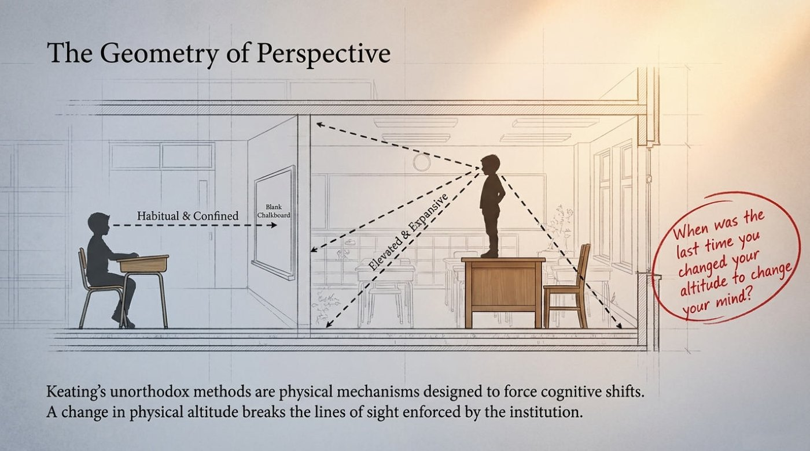
The deck’s most original slide is a piece of classroom geometry. “Keating’s unorthodox methods are physical mechanisms designed to force cognitive shifts,” it explains, and the diagram contrasts two sightlines: the seated student’s view, labeled “Habitual & Confined,” aimed at a blank chalkboard, and the desk-standing student’s view, labeled “Elevated & Expansive,” sweeping the whole room. The key sentence is the one under the diagram: “A change in physical altitude breaks the lines of sight enforced by the institution.” The metaphor’s genius is its claim that thinking has a body. A new idea, in this framing, is not merely accepted by the mind — it is physically stood on, looked around from, and seen differently. The deck’s own margin note turns the image back onto the reader, urging everyone to recall the last time they changed their altitude to change their mind, and it converts a film scene into a personal exercise.
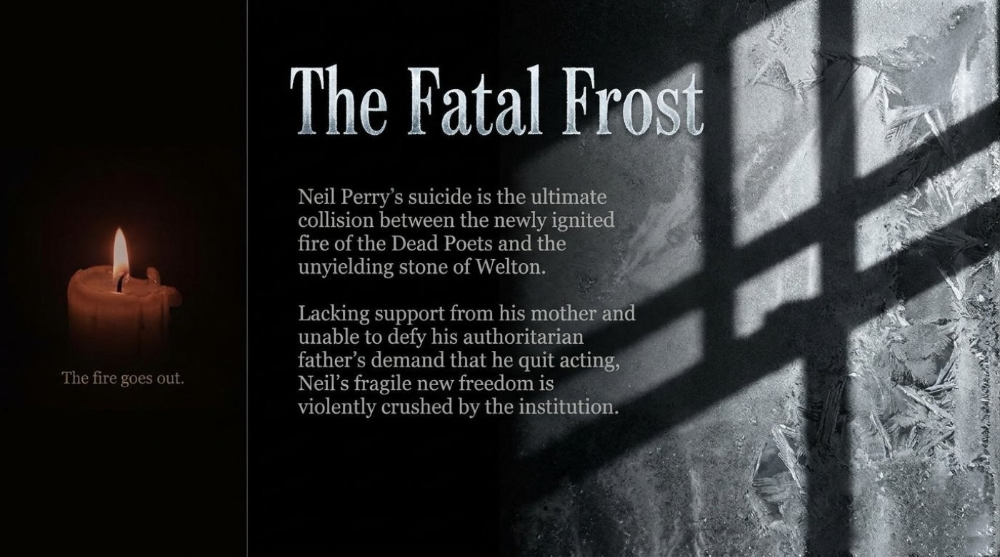
The tragedy slide stages the collision as weather. The flame — “the newly ignited fire of the Dead Poets” — meets “the unyielding stone of Welton” on a frosted windowpane, and the slide’s quiet candle caption delivers the verdict: “The fire goes out.” The significance of the temperature metaphor is that it explains Neil Perry’s fate without villains and monsters. Frost is not evil; it is simply cold, pervasive, and patient, and a small flame cannot negotiate with it. The deck’s earlier fire language — an “ignited” curiosity, poems recited like torch-passes — makes the final image land with full weight: everything the boys built was warm, warm things need shelter, and Welton provided none. Remember that the material’s own lesson follows from this metaphor: freedom that arrives suddenly, without shelter or allies, burns bright and brief.
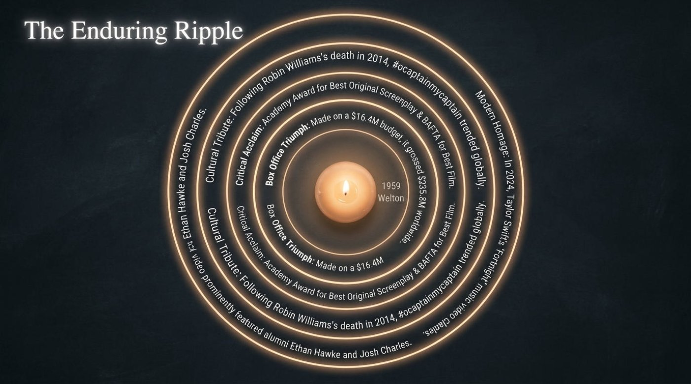
The deck’s closing diagram spreads the film’s legacy as rings around a burning candle, and the choice is itself a metaphor. A ripple is what happens when a single point of disturbance keeps transferring energy outward — and the rings list the transfers in order: “Made on a $16.4M budget, it grossed $235.8M worldwide” (the box-office ring), “Academy Award for Best Original Screenplay & BAFTA for Best Film” (the critical ring), “Following Robin Williams’s death in 2014, #captainmycaptain trended globally” (the tribute ring), and “In 2024, Taylor Swift’s ‘Fortnight’ music video prominently featured alumni Ethan Hawke and Josh Charles” (the modern ring). The significance is that the deck refuses to let the story end in frost. Fire and frost describe the world inside the film; the ripple describes the world outside it, where Keating’s lesson has kept traveling — through audiences, through hashtags, through pop culture — long after the classroom scene faded. Influence, the deck argues, is not a moment but a wave, and teaching that changes one room eventually reaches the shore.
The quiz below draws eight questions directly from the material: its facts, its vocabulary in context, one true-or-false item, and one fill-in-the-blank. Each answer delivers instant feedback, a short explanation drawn from the deck, a live score counter, and a progress dot that marks every step. The final panel offers a full reset, so the check can be repeated until the score feels earned.
8 / 8
Perfect score.
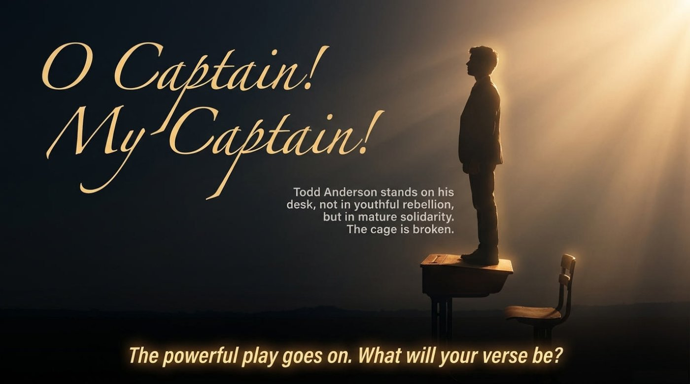
The deck’s last slide returns to the film’s most famous gesture and reframes it with quiet precision: “Todd Anderson stands on his desk, not in youthful rebellion, but in mature solidarity. The cage is broken.” Those two sentences contain the entire journey of the material. The boy who once could not speak a sentence in public now rises in front of authority, and the deck names his motive with adult accuracy — solidarity, not adrenaline. Beside the standing figure, the slide keeps alive the film’s most enduring line, “The powerful play goes on,” and leaves every reader facing the challenge it attaches to it: the play is running, and the verse each person contributes to it is theirs to write.
The main takeaway for a language learner flows straight from that final image. Vocabulary lists, grammar tables, and quizzes are the Welton Way — useful pillars, but pillars alone; the yawp, the rip, the desk are the Keating Way, and fluency lives on that side of the torn page. The practical next steps are concrete: replay the vocabulary game until the six core terms feel automatic, retake the quiz above after a day or two, download the original deck and read it aloud — every quoted line is a spoken-practice script — and then choose one new phrase, seize the day, barbaric yawp, subversion, or the rest, and use it in a real conversation this week. The powerful play goes on. The verse belongs to the reader.
The original lesson materials below open in a new tab. They pair naturally with this article: read the deck first for the full visual context, then return here for the interactive practice.
— seizing the day, one word at a time —